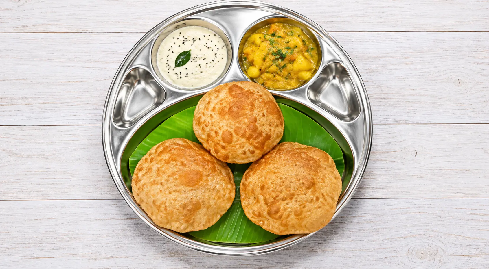

ANUPANAM FOODS Food Gallery
Explore our delicious South Indian vegetarian food, fresh meals, dosas, juices and beverages at ANUPANAM FOODS, Madurai.





Explore our delicious South Indian vegetarian food, fresh meals, dosas, juices and beverages at ANUPANAM FOODS, Madurai.
